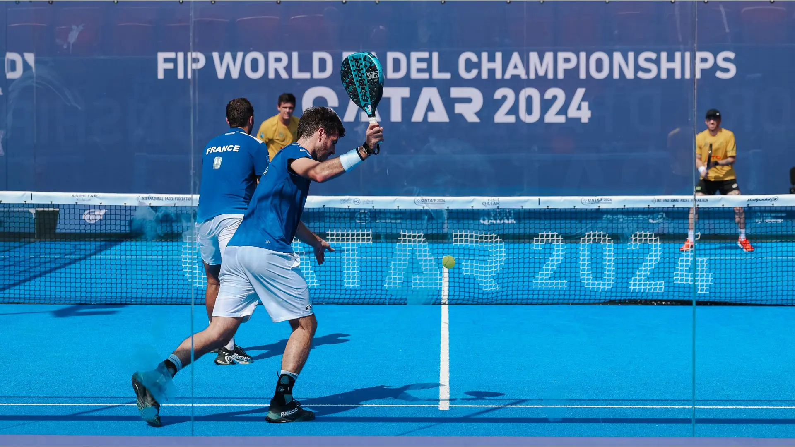

🏠 Home
Serving in PaDel🎾
Proper serving technique is crucial in padel. It involves a combination of power, accuracy, and placement.
Tips for Better Serving:
- Watch a video tutorial on 5 tips for a better serve
- Use a consistent toss to ensure accuracy.
- Focus on hitting the ball with the center of your paddle face.
- Practice different serve placements to keep opponents guessing.
- Work on your serve speed and spin for better control.
